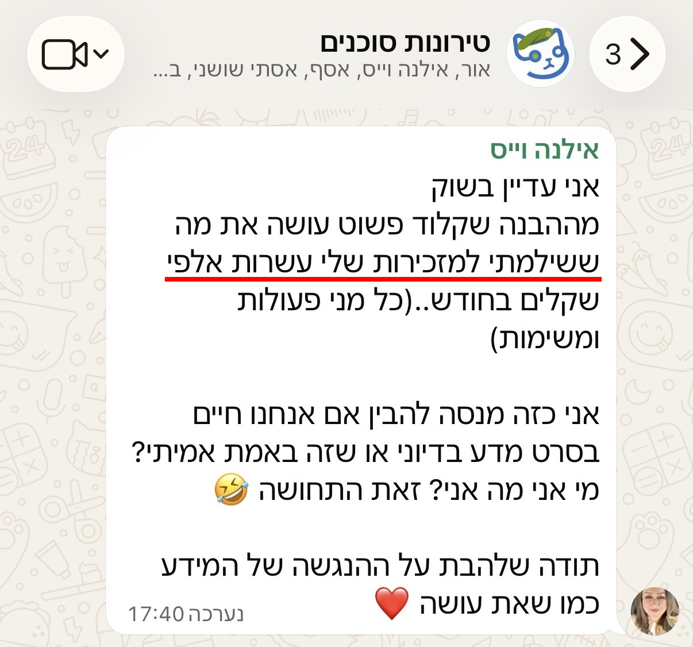

אילנה וייס
מטפלת בחרדות
"אני עדיין בשוק - קלוד עושה את מה ששילמתי למזכירות שלי עשרות אלפי שקלים בחודש. אני מנסה להבין אם אנחנו חיים בסרט מדע בדיוני."
"הייתה לי מחלקה שלמה של מזכירות - 4. אני לא אצטרך את זה יותר. חיסכון כלכלי מטורף."
לדבר עם אילנה ↻ הפכו את הכרטיס לראות מה אילנה בנתההצוות של אילנה
- החליפה מחלקת מזכירות שלמה (4 עובדות) - קלוד עורך בנושן, מסכם, מתמלל ומנתח נתונים כלכליים
- סקיל שהעביר את כל ה-ClickUp שלה ל-Notion אוטומטית
- אוטומציה שמחפשת ומשווה (רופא, מוצר, שירות) - אוספת ביקורות ומסכמת
- סוכן תמלול שיחות מכירה
- דף נחיתה אישי שעלה לאוויר
"הקורס מדהים - ממוקד בלי מיליון שיעורים מיותרים, אבל מקיף את הכל. את גאונה."
